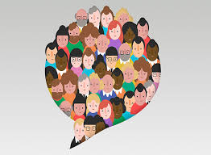

Pasos que se utilizaron para desarrollar el programa PAEC
Diagnostico colectivo
Diseño del programa

Programa Aula, Escuela y Comunidad
Es un eje de formación del Curriculum ampliado que situa al estudiante como protagonista de proyectos comunitarios socioemocional y educativos. Su principal propósito es integrar y transversalizar los conocimientos de las diversas asignaturas y ámbitos socioemocionales quqe permitan analizar tanto las problematicas y situaciones del entorno inmediato como aquellos factores de distintos alcances, y proponer alternativas de solución o apoyo a la problematica identificada, mediante diversas estrategias pedagogicas.
a) Las áreas no están del todo limpias
b) Los alumnos no son conscientes en el aseo de la escuela
c) A veces hay mucha basura regada
d) No hay una separación adecuada para la basura
e) Las aulas están descuidadas por los alumnos
a) Mejorar nuestros ámbitos
b) Apoyar y colaborar con lo que se pueda
c) Empezar por poner ejemplo a otros compañeros
d) Poner contenedores de reciclaje para separar la basura (orgánico e inorgánico)
e) Poner orden en el aula y ser organizados (básicamente en la limpieza)
a) Prohibir la entrada a los animales ya que ellos tiran parte de la basura de los contenedores
b) La limpieza del aula
c) Cuidar más las áreas verdes
d) Mas botes de basura en la escuela
e) Sancionar a los alumnos que no respetan las áreas
a) Que hubiera más conciencia en los alumnos sobre su limpieza
b) Mas limpio
c) Disminución de plásticos
d) Fomentación de la limpieza en las aulas
e) Mas organizada
a) En la limpieza
b) Conciencia del orden
c) En tener una buena imagen
d) Yo considero que se debería de enfocar en que haya un mejor manejo de limpieza en la escuela
e) Pienso que en habla con los demás alumnos sobre la importancia que brinda cuidar nuestra escuela
Video:
Video:
Video: